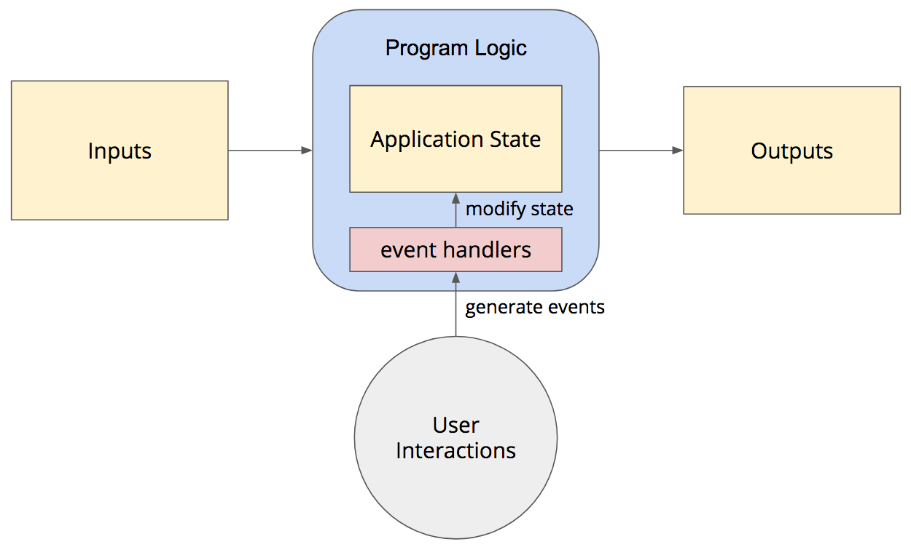
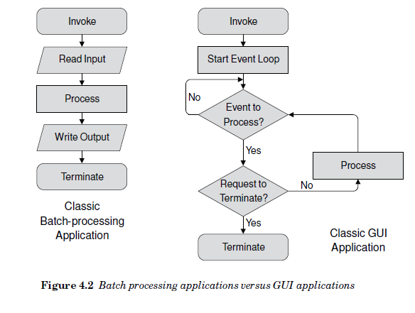
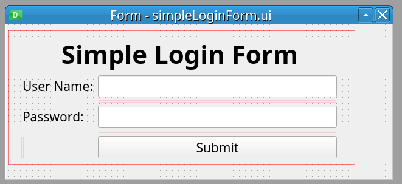

Keyboard shortcuts:
N/СпейсNext Slide
PPrevious Slide
OSlides Overview
ctrl+left clickZoom Element
If you want print version => add '
?print-pdf' at the end of slides URL (remove '#' fragment) and then print.
Like: https://wwwcourses.github.io/...CourseIntro.html?print-pdf
Created for

Iva E. Popova, 2022-2023,

How a GUI app works?
How a GUI app works?
A GUI App (event-driven) processing
- A GUI App processing model is event-driven 
- An event can be any user action, like click, scroll, input etc.
- An event handler is a function which defines the actions that must be executed after an event is triggered.
{kind=link}
Procedural app VS Event-driven app
- Procedural app
- Event-driven programming relies on event-loop to process events
def sub_task_1():
pass
def sub_task_2():
pass
#....
def sub_task_N():
pass
if __name__ == "__main__":
sub_task_1()
sub_task_2()
# ...
sub_task_N()
def start_event_loop():
while True:
if event_queue_not_empty:
if terminate_signal:
exit()
else:
process event()
else:
wait for event
if __name__ == "__main__":
start_event_loop( )
Procedural app VS Event-driven app - Diagram
{kind=link}
Understand the structure of a PyQt Application
Understand the structure of a PyQt Application
Minimal structure of a PyQt App
# 1. import needed QtWidgets classes
from PyQt6.QtWidgets import QApplication, QWidget
# 2. the main app instance for our application.
app = QApplication([])
# 3. Create Qt widget, which will be our main window.
window = QWidget()
# 4. show the window
window.show()
# 5. Start the event loop
app.exec()
- The QApplication class manages the GUI application's control flow and main settings
- We need one (and only one) QApplication instance per application.
- The QApplication instantiation must be set before any kind of widget or window creation!
- The QtWidgets module provides a set of classes corresponding to UI elements which we can use to create our GUI app.
- The QWidget class is the base class of all user interface objects.
- widget is a generic name for any kind of GUI item, like window, button, label, checkbox...
QApplication Class
app = QApplication(sys.argv)
- The QApplication class manages the GUI application's control flow and main settings. It handles widget specific initialization, finalization, etc.
- For any GUI application using Qt, there is precisely one QApplication object, no matter whether the application has 0, 1, 2 or more windows at any given time.
- This application object must be constructed before any paint devices (including widgets, pixmaps, bitmaps etc.).
- QApplication() constructor initializes the window system and constructs an application object. It accepts a list with
argvcommand-line arguments. - Reference: QApplication Class
QApplication exec()
app.exec()
# best practice:
sys.exit(app.exec())
app.exec()begins the QApplication event loop which process our user interactions with the GUI.- The main event loop receives events from the window system and dispatches these to the application widgets.
- The event loop will run forever until the application quits.
- In Python3 and before PyQt6 both
app.exec_()andapp.exec()methods are implemented, becauseexecis a reserved word in Python2 - Note that PyQt6, which supports only Python3, removes the
app.exec_()method - It's a good practice our Python script to exit with the same exit status as app.exec() status. That's why we use
sys.exit(app.exec()) - Reference: QApplication::exec()
QWidget Class
window = QWidget()
window.show()
- The QWidget class is the base class of all user interface objects
- The show method will show the widget in its own (as a standalone container). If we want to create a widget which will be used inside other widget (i.e. a child widget) we would not call the show method on it.
- Reference: QWidget Class
Qt Class Hierarchy
Qt Class Hierarchy
Overview
- Qt widely uses inheritance, especially in the Widgets module. The following graph shows some of these inheritances:

Using UI Compiled files
Using UI Compiled files
Create Simple Login Form GUI with QtDesigner - Live Demo
- Get familiar with widgets using "Widget Box"
- Inspect Widgets's Objects using "Object Inspector"
- Inspect Object Properties using "Property Editor"

{kind=link}
Using pyuic6 to convert the ui file to Python code
pyuic6(Python User Interface Compiler) tool can compile theuifile to Python code
pyuic6 [options] file.ui
- you can see available options by typing
pyuic6 --help
Options:
--version show program's version number and exit
-h, --help show this help message and exit
-p, --preview show a preview of the UI instead of generating code
-o FILE, --output=FILE
write generated code to FILE instead of stdout
-x, --execute generate extra code to test and display the class
-d, --debug show debug output
-i N, --indent=N set indent width to N spaces, tab if N is 0 [default:
4]
- If we do not specify an output file (using
-o) option, the generated python code will be sent to console's output. That's why we must use the-ooption
pyuic6 simpleLoginForm.ui -o simpleLoginForm.py
The problem of manipulating pyuic6 generated files
- Yes, we can automatically create a Python file from a QtDesigner
.uifile, we can even use the-xoption to generate extra code to run and display the class. But we should never write our functionality in this file
ls -l
# simpleLoginForm.ui
# note, the use of '-x' option
pyuic6 -x -o simpleLoginForm.py simpleLoginForm.ui
ls -l
# simpleLoginForm.py
# simpleLoginForm.ui
python simpleLoginForm.py
- But note the commented warning in generated file:
# WARNING: Any manual changes made to this file will be lost when pyuic6 is
# run again
The problem of manipulating pyuic6 generated files
- Also, the class generated by pyuic6 inherits from the Python's
objectobject, not from the QWidget, and that make the code more obscure
class Ui_Form(object):
...
Form = QtWidgets.QWidget()
ui = Ui_Form()
ui.setupUi(Form)
The right way of using UI Compiled files
- The QtDesigner program is deigned to speed the work in huge and complicate GUI apps. As Qt itself, it is fitted to OOP style of programming.
- The write way to use pyuic6 generated files is to use them as modules, which we'll import in our main app
Using UI Compiled files as modules
Using UI Compiled files as modules
Direct Approach - the worst variant
import sys
from PyQt6 import QtWidgets as qtw
from simpleLoginForm import Ui_Form
if __name__ == "__main__":
app = qtw.QApplication(sys.argv)
w = qtw.QWidget()
gw = Ui_Form()
gw.setupUi(w)
w.show()
sys.exit(app.exec())
- Cons:
- This Approach is not flexible, nor loosely coupled
Multiple Inheritance - the best variant
import sys
from PyQt6 import QtWidgets as qtw
from simpleLoginForm import Ui_Form
class MainWindow(qtw.QWidget, Ui_Form):
def __init__(self):
super().__init__()
self.setupUi(self)
# add as any properties here...
self.setWindowTitle('The title of main window')
if __name__ == "__main__":
app = qtw.QApplication(sys.argv)
w = MainWindow()
w.show()
sys.exit(app.exec())
Recap class inheritance in Python
Make sure you really understand the concept of class inheritance in Python
# the base class
class Parent:
def __init__(self,*args, **kwargs):
print(f'{self} constructor execute')
print(args)
print(kwargs)
# the derived class, which inherits from base class:
class Child(Parent):
def __init__(self, *args, **kwargs):
super().__init__(*args, **kwargs)
p1 = Parent(1,2,a=3,b=4)
c = Child(5,6,c=7,d=8)
Exercises
Exercises
Task1: Calculator GUI
- Create the UI of a calculator, like the one shown in next image.
- Use the Qt Designer and save the file as
calculator.ui - Convert the generated
calculator.uifile to python module, using thepyuic6tool - Create your calculatorApp.py file for the app, using the "Multiple Inheritance" approach.

Auto-Compiling UI files
Auto-Compiling UI files
- The Qt team provides a method
uic.loadUiTypewhich generates and loads a .ui file at runtime. It returns a tuple containing the reference to the Python class, and the base class - But note that this approach is not recommended.
- Reference: loadUiType
import sys
from PyQt6 import QtWidgets as qtw
from PyQt6 import uic
generated_class, base_class = uic.loadUiType('./ui/btnWidget.ui')
print(generated_class, base_class)
if __name__ == "__main__":
app = qtw.QApplication(sys.argv)
w = base_class()
form = generated_class()
form.setupUi(w)
w.show()
sys.exit(app.exec())
Create PyQt App template (OOP style)
Create PyQt App template (OOP style)
Core Qt modules
For now, in our "dummy" Qt App, we've used only the QtWidgets module. But any Qt App will use (and must include) next three modules:
- QtCore - contains low-level data wrapper classes, utility functions, and non-GUI core functionality
- QtGui - contains GUI-specific data wrapper classes and utilities
- QtWidgets - defines GUI widgets, layouts, and other high-level GUI components
from PyQt6 import QtWidgets as qtw
from PyQt6 import QtCore as qtc
from PyQt6 import QtGui as qtg
Never use * imports with Qt modules, as you risk to overwhelm your namespace with hundreds of names
The Template
- As we already show, it's a good practice to separate our UI logic in separate class, which will inherits from class/classes it needs
- In next code is the template which we can use for any GUI app as a starter code
import sys
from PyQt6 import QtWidgets as qtw
from PyQt6 import QtCore as qtc
from PyQt6 import QtGui as qtg
class MainWindow(qtw.QWidget):
def __init__(self, *args, **kwargs):
super().__init__(*args, **kwargs)
# --------------------------- your code starts here -------------------------- #
# ---------------------------- your code ends here --------------------------- #
self.show();
# ------------------------ create your methods here -------------------------- #
if __name__ == '__main__':
app = qtw.QApplication(sys.argv);
window = MainWindow()
sys.exit(app.exec())
Hand Code the UI of a Login Form Widget
Hand Code the UI of a Login Form Widget
Why?
- The code produced by pyuic6 is overwhelmed and not clean.
- Hand-coding could be even faster (if you have know your IDE well) than using the QtDesigner.
- You can really learn Qt App methodology only if you have hand-coded a simple GUI App.
- For next examples, we'll be using the template we've already created:
- Tip: you can setup a custom snippet with this template in your editor.
- For PyCharm see Tutorial: Creating and Applying Live Templates (Code Snippets)
- For VSCode see: Snippets in Visual Studio Code
QWidget class
- QWidget is the parent class of all other widgets (including QMainWindow)
- All properties and methods of
QWidgetclass will be also available in any other widget. - When a QWidget is created without a parent and its show() method is called, it becomes a top-level window
- When we use it as a top-level window (as we did with in our template), there are some window-specific properties we can set.
- note, that the cursor value is an enum type, defined in QtCore module
- Every property of a
QWidgetobject has its Access function, which allows you to set that property after the object is created - Reference: QWidget Class
window = MainWindow(cursor=qtc.Qt.CursorShape.WaitCursor)
# equivalent to example above
window = MainWindow()
window.setCursor(qtc.Qt.CursorShape.WaitCursor)
Primary and Child Widgets
- Any QWidget that has no parent will become a window, and on most platforms will be listed in the desktop's task bar.
- Such window is called primary window
- Usually, in our GUI App we want only one primary window.
- If we pass a parent argument when we create new widget, that widget will be a child of the prent widget and will become a part of its parent.
- Reference:
- Primary and secondary windows
Create user input widgets
- Of course, we did not see the created widgets, because they are not attached to our main window
- We can attach them directly to out main window by passing it as parent argument to QLineEdit() constructor :
- But we did not set the geometry of our main windows, so the result is not what we want.
- References:
- QLineEdit Class
- EchoMode Property
# --------------------------- your code starts here -------------------------- #
# create user input widgets:
user_name_input = qtw.QLineEdit()
password_input = qtw.QLineEdit()
#
password_input.setEchoMode(qtw.QLineEdit.EchoMode.Password)
# ---------------------------- your code ends here --------------------------- #
# create user input widgets:
user_name_input = qtw.QLineEdit(self)
password_input = qtw.QLineEdit(self)
References && Self-Learning
References && Self-Learning
PyQt Official Documentation
- Qt Documentation - note,that this documentation covers Qt framework, i.e. C++ classes.
- PyQt6 Reference Guide - the officail PyQt6 documentation from riverbankcomputing.com
- Qt for Python Documentation - this is the documentation for PySide2, but it's more usefull than the sparse docs for PyQt
- PyQt's documentation covers only the Python-specific differences and lacks comprehensive class reference, tutorials and example code which can be find in Qt's documentation.